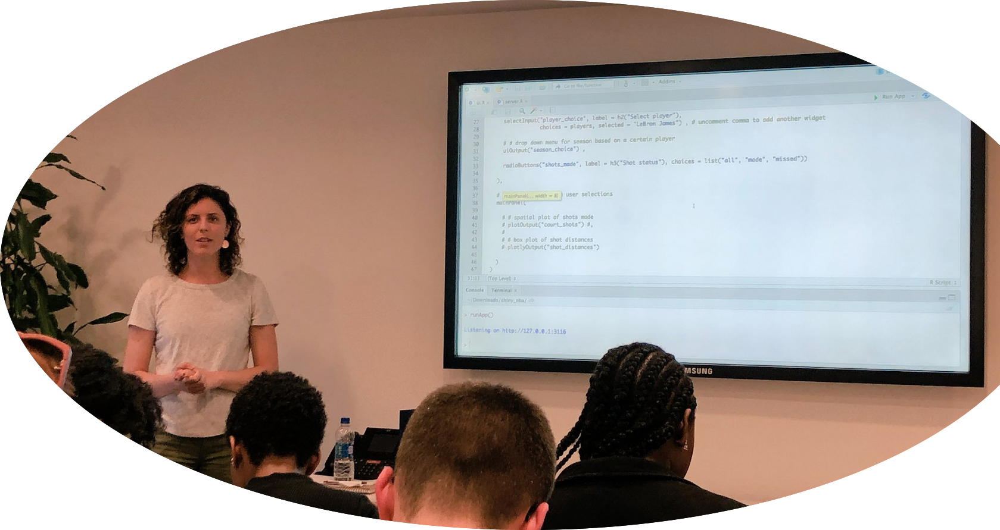

Below are links to my tutorials.

The Hitchhiker’s Guide to Reproducible Research
A single-cell spatial proteomics and multiplex imaging data workshop
A short course on Analysis of Multiplex Single-Cell Imaging Data in R
Introduction to Shiny with NBA data:
Introduction to Bayesian Regression